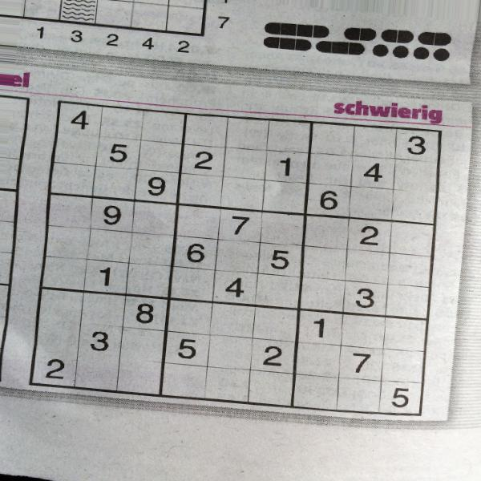

Sudoku Solver
It uses OpenCV.js for recognition of the grid. The library Tesseract.js does the recognition of
numbers.
You can use the given image of sudoku, upload your own sudoku image or take a image with your phone:
